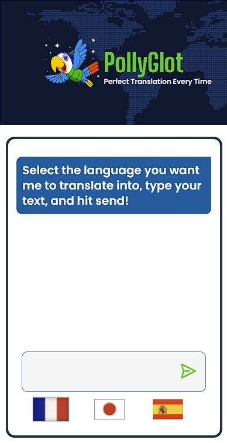

Powered by OpenAI
After completing my Fall 2023 semester, I dove into the Scrimba AI Engineer path. My first solo project was this translator app, built in React and utilizing the OpenAI API for the actual translation. This was a ton of fun, and I'm looking forward to working with the API more in the future. Some of the achievements for this project include:
This was my first time designing an AI powered project. Due to the potential cost of leaving a functional site up with the OpenAI API, there is no live site. Instead, here is a video to demonstrate the capabilities of the Pollyglot Translator.